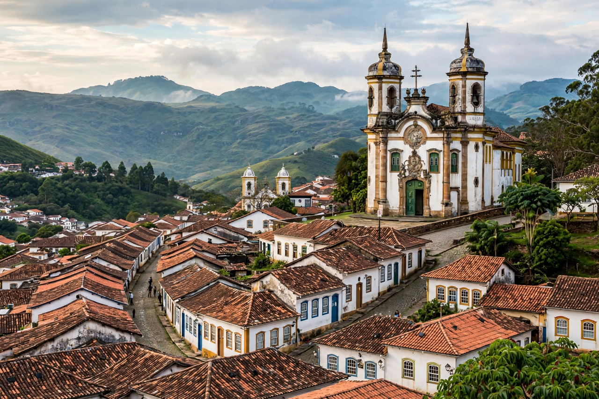

Ouro Preto (Portuguese for "Black Gold") is a city in the state of Minas Gerais, Brazil, famed for its extraordinarily well-preserved Portuguese colonial architecture and its central role in the Brazilian gold rush. Founded at the end of the 17th century as Vila Rica ("Rich Town"), it was the capital of Minas Gerais until 1897, when the capital moved to the planned city of Belo Horizonte. In 1980 Ouro Preto became the first Brazilian site inscribed on UNESCO's World Heritage List.
| Ouro Preto | |
|---|---|
 | |
| Country | Brazil |
| State | Minas Gerais |
| Founded | 1711 (as Vila Rica) |
| Population | ~75,000 |
| Status | UNESCO World Heritage Site (1980) |
Gold was discovered in the region's streams in the 1690s by bandeirantes from São Paulo; the gold appeared black because of a coating of iron oxide, hence the name. Vila Rica became the focus of the 18th-century gold cycle, which shipped enormous quantities of gold to Portugal and financed baroque art and architecture. The city was the stage of the Inconfidência Mineira (1789), a separatist conspiracy inspired by Enlightenment ideas and American independence; its leader, Joaquim José da Silva Xavier — "Tiradentes" — was executed in 1792 and later became a national hero of Brazil. As gold ran out in the 19th century the city declined, which inadvertently preserved its colonial fabric.
Ouro Preto's steep cobbled streets are lined with colonial houses and some twenty baroque and rococo churches, carved and gilded by artists including Antônio Francisco Lisboa, "Aleijadinho" ("the little cripple"), Brazil's greatest colonial sculptor, and the painter Manuel da Costa Ataíde. Masterpieces include the Church of Saint Francis of Assisi (São Francisco de Assis), the Church of Our Lady of Mount Carmel, and the Church of Our Lady of the Pillar, whose interior used hundreds of kilograms of gold leaf. The Museu da Inconfidência in Praça Tiradentes documents the conspiracy and the gold era.
Today Ouro Preto is a university city (home to the Federal University of Ouro Preto, UFOP) and a major tourist destination, known for its Holy Week celebrations with sawdust carpets, its winter festival, and student republics (repúblicas) housed in historic buildings.